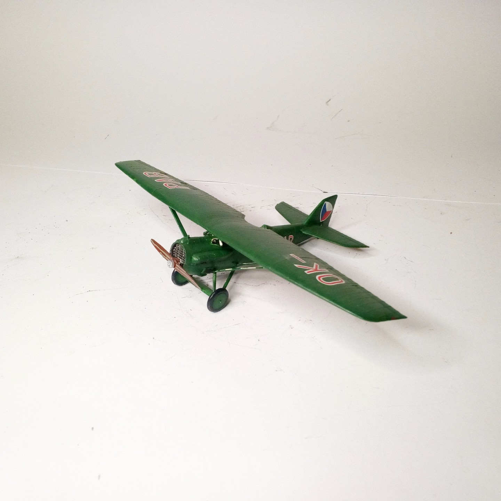
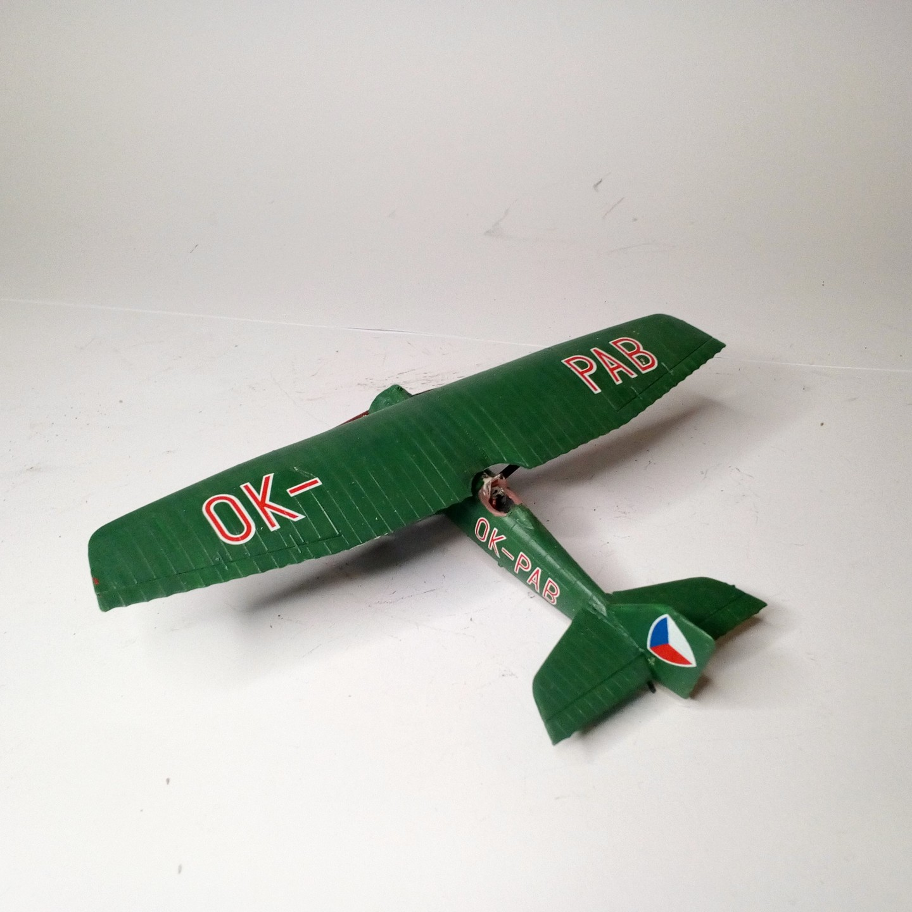

Mezzi militari · scale model archive
Skoda D1
Skoda D1 — Kit: KOPRO, Scale: 1/72. Československé letectvo (Czechoslovak Air Force 1918-1939) Vojenské Letecké učiliště (Military Air Force School)…

Photo gallery

English description
Československé letectvo (Czechoslovak Air Force 1918-1939) Vojenské Letecké učiliště (Military Air Force School) Prostějov c 216
#1/72 #KOPRO
Descrizione italiana
Československé letectvo (Aeronautica cecoslovacca 1918-1939) Vojenské Letecké učiliště (Military Air Force School) Prostějov c 216.